Signalez un problème de l'espace public. Suivez ce qu'il devient.
Prototype non fonctionnel construit sur Materialize CSS, à partir des maquettes de référence fournies. Deux surfaces : le parcours citoyen sur mobile et la console de traitement pour les agents. Toutes les données sont simulées.
Parcours citoyen
Mobile d'abord, sans compte. Le formulaire tient en quatre étapes courtes ; la photo est facultative ; la référence n'apparaît qu'après l'enregistrement confirmé.
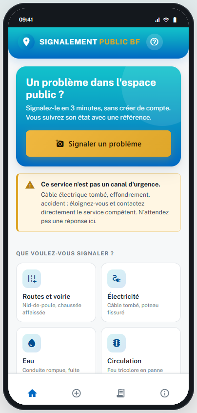
Le service, l'avertissement d'urgence et les huit catégories.
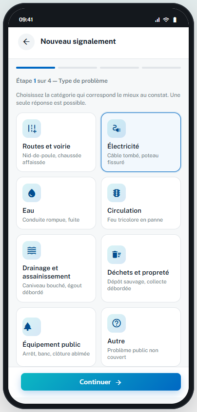
Une seule sélection, avec des exemples concrets par catégorie.
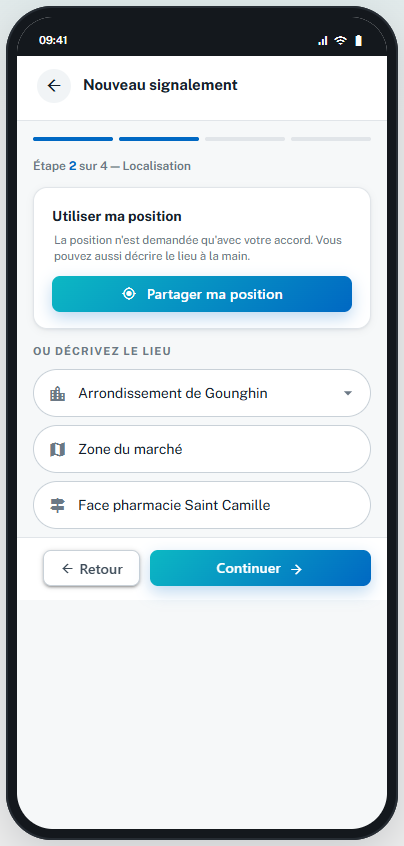
GPS sur autorisation, sinon commune, quartier et repère. Le refus ne bloque pas.
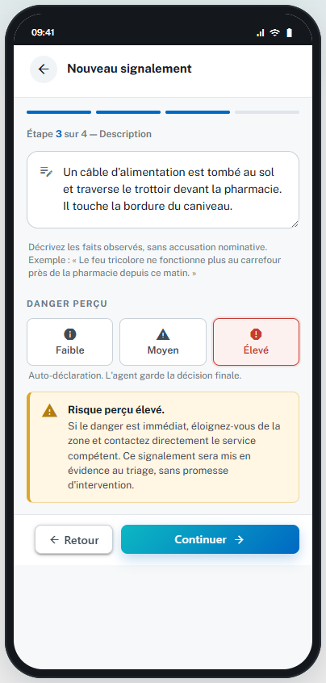
Faits observés et danger déclaré ; l'alerte d'urgence s'affiche au niveau élevé.
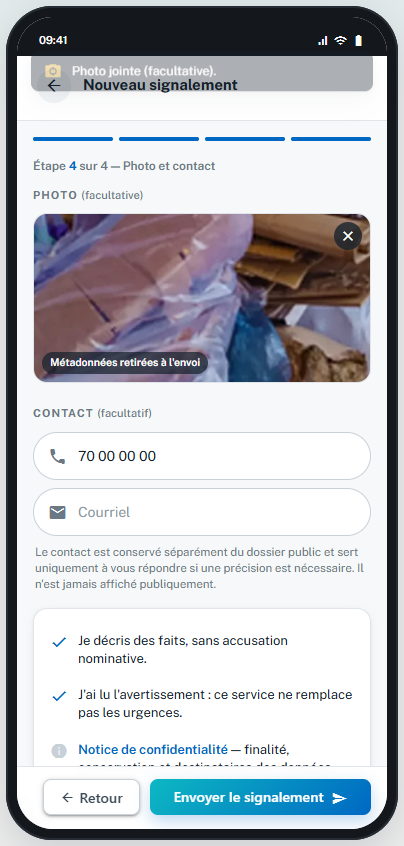
Photo facultative avec métadonnées retirées, contact facultatif et séparé du dossier public.
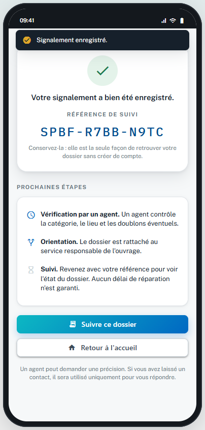
La référence aléatoire s'affiche après l'enregistrement, jamais avant.
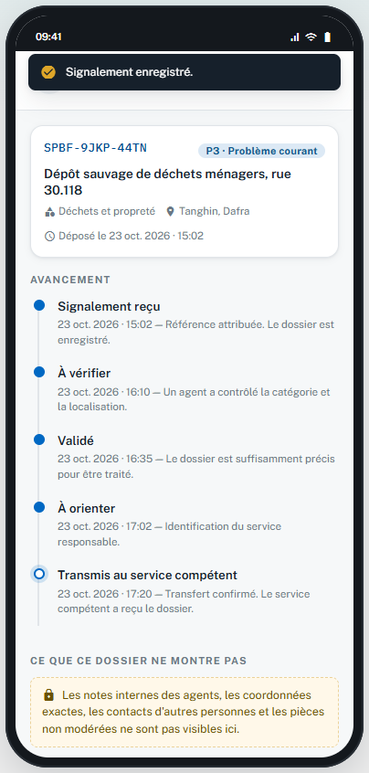
Avancement étape par étape, sans notes internes ni coordonnées exactes.
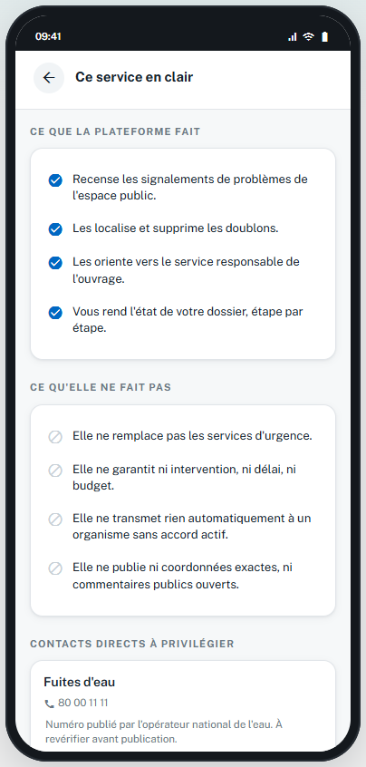
Ce qu'il fait, ce qu'il ne fait pas, et les contacts directs.
Console de traitement
Surface dense, pensée pour l'action. Les règles métier du PRD sont appliquées dans l'interface : pas de « Transmis » sans transfert confirmé, pas de fusion qui efface une référence.
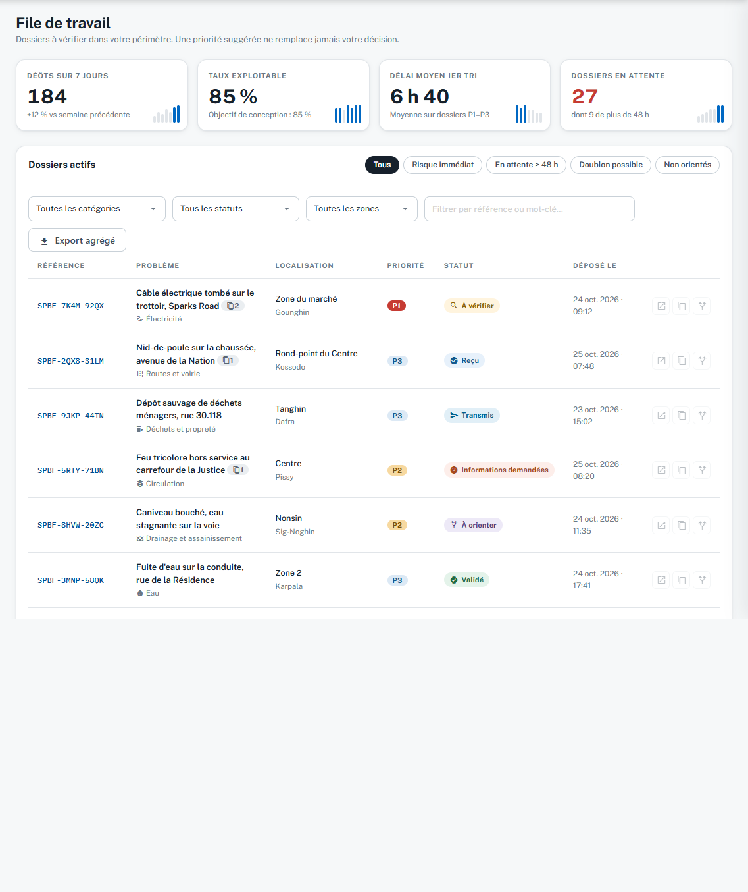
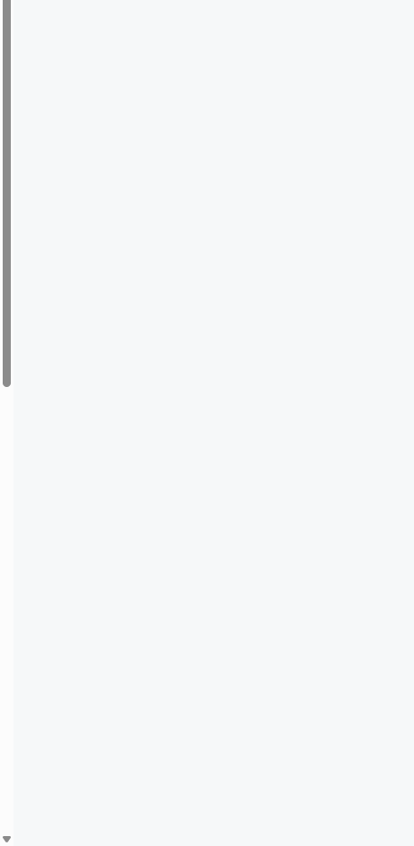
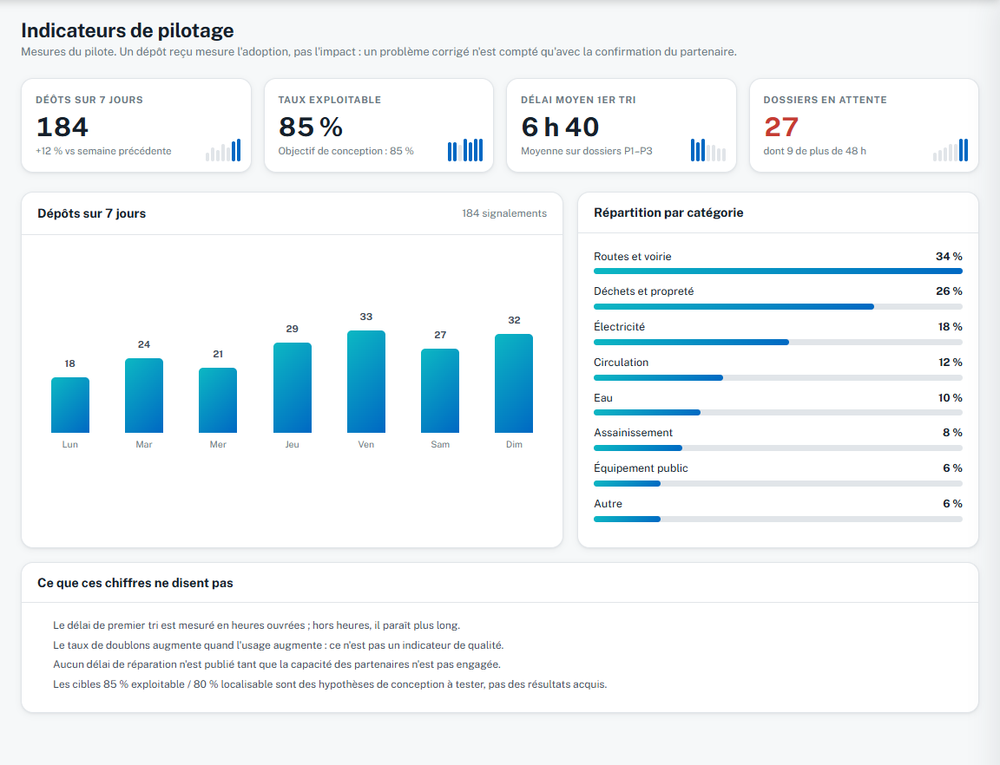
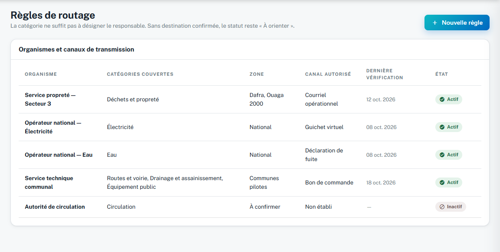
Ce que le prototype couvre
Repères issus des trois versions du PRD rangées dans kb/. Les fonctions non couvertes
restent hors périmètre de ce prototype.
| Fonction | Dans le prototype | Écart assumé |
|---|---|---|
| F01 — Dépôt citoyen | Formulaire 4 étapes, GPS ou saisie manuelle, photo et contact facultatifs | Aucun envoi réel ; les photos sont simulées |
| F02 — Suivi par référence | Référence aléatoire non séquentielle, timeline de statut, message public | Suivi simulé pour deux références de démonstration |
| F03 — Traitement | File, filtres, priorité P1–P4, demande de précision, fusion de doublons | La priorité est affichée, jamais décidée automatiquement |
| F04 — Orientation et clôture | Routage conditionné à un circuit actif, transfert confirmé exigé | Le changement de statut n'est pas persisté |
| F05 — Administration et traçabilité | Journal d'audit, règles de routage, rôles et accès, indicateurs | Pas de back-office de configuration des catégories |
| CR02 / CR03 | Dépôt sans photo accepté, fichier non image refusé, aucune fausse confirmation | Les rejets sont déclenchés de façon aléatoire pour la démonstration |
| CR06 | « Transmis » bloqué sans transfert confirmé ; « À orienter » conservé | Règle visible dans l'interface, pas appliquée côté serveur |
| CR07 | Avertissement d'urgence sur l'accueil et sur le danger élevé | Aucun contact d'urgence réel n'est vérifié |
| Hors périmètre | Notifications, carte publique, multilinguisme, PWA, application native | Non traités, conformément au PRD |
Prototype non fonctionnel — données de démonstration.
Materialize CSS 1.0.0 · Public Sans · Material Icons — tous les dépendants sont servis localement.